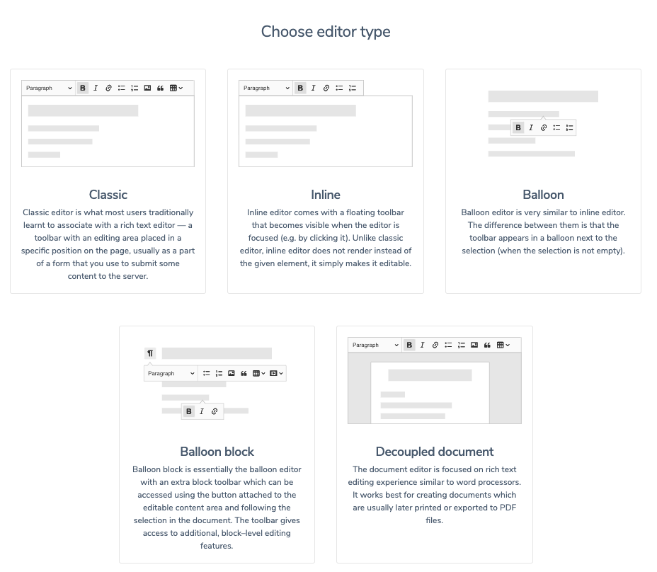
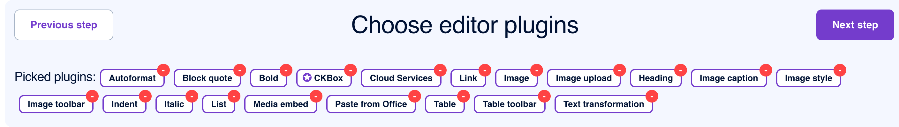
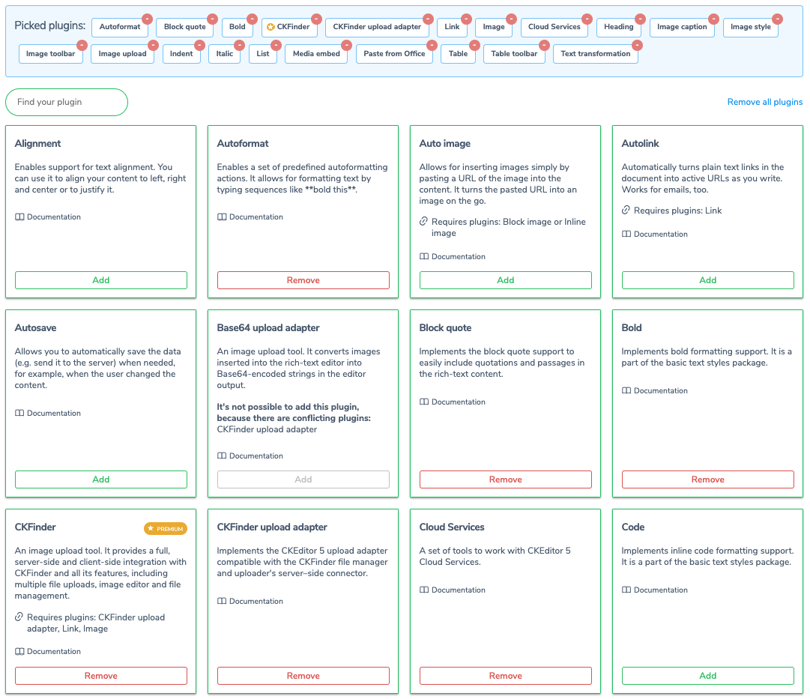
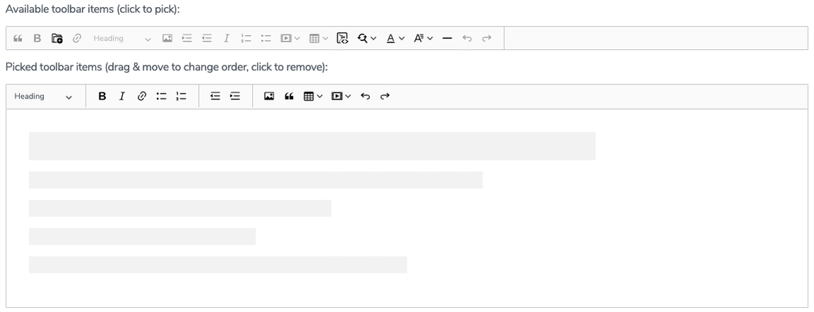
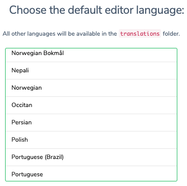

Customized installation
Customized installation
# Introduction
This guide will teach you how to run your own CKEditor 5 instance. Below you can find two unique paths describing the installation process. Choose one (or both!) and start your CKEditor 5 journey!
Available paths:
- Online builder path – The most beginner-friendly and quickest path.
- Building from the source path – An advanced path including using
npmand webpack.
# Creating custom builds with online builder
Although the CKEditor 5 WYSIWYG editor comes with handy predefined builds, sometimes you need more flexibility. A need for more customized editors arises. Some reasons for creating custom builds are:
- Adding plugin-driven features not included in the existing builds.
- Removing unnecessary features present in a build.
- Designing a customized toolbar experience.
- Changing the editor type build.
- Changing the localization language of the editor.
The online builder is an application that lets you design and download custom CKEditor 5 builds. It allows you to create your bundles with your desired editor type, toolbar, and plugins in a few easy steps through a simple and intuitive UI.
# Choosing the editor type
The following editor types are currently available to choose from:
Refer to the predefined builds documentation and examples to check what kind of WYSIWYG editor suits your needs best. Once you choose the desired editor type, select it to move to the next step.
For clarity, this guide will use the classic build as an example.

# Choosing plugins
The basic build comes with a predefined set of plugins grouped in a bar at the top of the page. Take a moment to check these options out. You can freely remove the ones unnecessary in your build.

Below the top bar with preselected plugins, you will find a sizable collection of features. You can add them to your custom build. Choose the ones that best suit your needs. Some plugins may not work well with others or may require dependencies. Online builder will provide information in such cases.

Some plugins require other plugins to work. These dependencies are mentioned in the Requires plugins section of the description box for each plugin. If this section is not present, the plugin does not need any other plugin to work.
Some of these plugins are premium features which require an additional license to run. They are marked with an appropriate Premium feature badge.
Once you have chosen all the desired plugins, press the Next step button on the top right.
# Toolbar composition
The next step allows you to compose the toolbar. A simple drag-and-drop workspace allows adding buttons (representing the plugins chosen in the previous step) to the toolbar. You may also change the order of the buttons and dropdowns and group them accordingly. Online builder allows you to create a multiline toolbar layout, too. Just drag any button below the already placed ones to create a new toolbar line.

Some buttons are pre-placed on the layout and thus grayed out in the workspace with available toolbar items. If you want to remove any buttons from your toolbar setup, drag them back to the upper workspace.
Once you finish designing the toolbar, press the Next step button on the top right.
# Choosing the default language
Scroll the list of available languages and check the one you want to be the default language of your editor build.

All other languages will still be available in the translations folder.
# Download the customized build
This is as simple as it gets: just press the Start button to download your customized package.
Now you have two options: to customize your build or run it in a browser.
# Customizing builds
Every build comes with a default set of features and their default configuration. Although the builds try to fit many use cases, you may still need to adjust them in some integrations. The following modifications are possible:
- You can override the default configuration of features (for example, define different image styles or heading levels).
- You can change the default toolbar configuration (for example, remove the undo and redo buttons).
- You can also remove features (plugins).
Read more in the Configuration guide.
A build may not provide all the necessary features. You may also want to create an optimized one with limited functionality. In such cases, customize the build or create a new one.
A build is a simple npm package (usually developed in a Git repository) with a predefined list of dependencies. You can generate distribution files through the build process using that repository.
Some of the reasons for creating custom builds are:
- Adding features not included in the existing builds, either from a third party or custom-developed.
- Removing unnecessary features present in a build.
- Changing the editor creator.
- Changing the editor theme.
- Changing the localization language of the editor.
- Enabling bug fixes that are still not a part of any public release.
If you are looking for an easy way to create a custom build of CKEditor 5, check the online builder. It allows you to create a custom build through a simple and intuitive UI.
# Requirements
To start developing CKEditor 5 you will require:
- Node.js 18.0.0+
- npm 5.7.1+ (note: some npm 5+ versions were known to cause problems, especially with deduplicating packages; upgrade npm when in doubt)
- Git
# Build anatomy
Every build contains the following files:
build/ckeditor.js– The ready-to-use editor bundle, containing the editor and all plugins.src/ckeditor.ts– The source entry point of the build. Based on it thebuild/ckeditor.jsfile is created by webpack. It defines the editor creator, the list of plugins, and the default configuration of a build.sample/index.html– The page where the editor script is attached.webpack-config.js– The webpack configuration used to build the editor.tsconfig.json– The configuration used by the TypeScript compiler.
To customize a build you need to:
- Install missing dependencies.
- Update the
src/ckeditor.tsfile. - Update the build (the editor bundle in
build/).
# Installing dependencies
First, you need to install dependencies that are already specified in the build’s package.json:
npm install
Then, you can add missing dependencies (that is, packages you want to add to your build). The easiest way to do so is by typing:
npm install @ckeditor/ckeditor5-alignment
Check out our dedicated guide if you want to use JavaScript packages or learn more about installing plugins.
# Updating build configuration
If you installed or uninstalled dependencies, you need to modify the src/ckeditor.ts file too. At this stage, you should have a complete list of plugins for the bundle. You can also change the editor creator and specify the default editor configuration. For instance, your webpack entry file (src/ckeditor.ts) may look like this:
// The editor creator to use.
import { ClassicEditor } from '@ckeditor/ckeditor5-editor-classic';
import { Alignment } from '@ckeditor/ckeditor5-alignment';
import { Autoformat } from '@ckeditor/ckeditor5-autoformat';
import { Bold, Italic } from '@ckeditor/ckeditor5-basic-styles';
import { BlockQuote } from '@ckeditor/ckeditor5-block-quote';
import { CloudServices } from '@ckeditor/ckeditor5-cloud-services';
import { Essentials } from '@ckeditor/ckeditor5-essentials';
import { Heading } from '@ckeditor/ckeditor5-heading';
import {
Image,
ImageCaption,
ImageStyle,
ImageToolbar,
ImageUpload
} from '@ckeditor/ckeditor5-image';
import { Indent } from '@ckeditor/ckeditor5-indent';
import { Link } from '@ckeditor/ckeditor5-link';
import { List } from '@ckeditor/ckeditor5-list';
import { MediaEmbed } from '@ckeditor/ckeditor5-media-embed';
import { Paragraph } from '@ckeditor/ckeditor5-paragraph';
import { PasteFromOffice } from '@ckeditor/ckeditor5-paste-from-office';
import { Table, TableToolbar } from '@ckeditor/ckeditor5-table';
import { TextTransformation } from '@ckeditor/ckeditor5-typing';
class Editor extends ClassicEditor {
// Plugins to include in the build.
public static override builtinPlugins = [
Alignment,
Autoformat,
BlockQuote,
Bold,
CloudServices,
Essentials,
Heading,
Image,
ImageCaption,
ImageStyle,
ImageToolbar,
ImageUpload,
Indent,
Italic,
Link,
List,
MediaEmbed,
Paragraph,
PasteFromOffice,
Table,
TableToolbar,
TextTransformation
];
public static override defaultConfig = {
toolbar: {
items: [
'alignment',
'heading',
'|',
'bold',
'italic',
'link',
'bulletedList',
'numberedList',
'|',
'outdent',
'indent',
'|',
'imageUpload',
'blockQuote',
'insertTable',
'mediaEmbed',
'undo',
'redo'
]
},
// This value must be kept in sync with the language defined in webpack.config.js.
language: 'en',
image: {
toolbar: [
'imageTextAlternative',
'toggleImageCaption',
'imageStyle:inline',
'imageStyle:block',
'imageStyle:side'
]
},
table: {
contentToolbar: [
'tableColumn',
'tableRow',
'mergeTableCells'
]
}
};
}
export default Editor;
# Rebuilding the bundle
After modifying the configuration or source code, you can rebuild the project to apply the changes. You most likely already have a build script in package.json. To run it, execute the following command:
npm run build
If you do not have the build script, learn more about building an editor.
# Running the editor
You can validate whether your new build works by opening the sample/index.html file in a browser (via HTTP, not as a local file). Make sure to clear the cache.
# Building the editor from source
This scenario allows you to fully control the building process of CKEditor 5. This means that you will not actually use the builds introduced in the previous path, but instead build CKEditor from source directly into your project. This integration method gives you full control over which features will be included and how webpack will be configured.
This is an advanced path that assumes that you are familiar with npm and that your project uses npm already. If not, see the npm documentation or call npm init in an empty directory and check the result.
# Setting up the environment
Before moving to the integration, you need to prepare three files that will be filled with code presented in this guide. Create the webpack.config.js, app.js, and index.html files.
Then, install the packages needed to build CKEditor 5:
npm install --save \
css-loader@5 \
postcss-loader@4 \
raw-loader@4 \
style-loader@2 \
webpack@5 \
webpack-cli@4
The minimal webpack configuration needed to enable building CKEditor 5 is:
// webpack.config.js
'use strict';
const path = require( 'path' );
const { styles } = require( '@ckeditor/ckeditor5-dev-utils' );
module.exports = {
// https://webpack.js.org/configuration/entry-context/
entry: './app.js',
// https://webpack.js.org/configuration/output/
output: {
path: path.resolve( __dirname, 'dist' ),
filename: 'bundle.js'
},
module: {
rules: [
{
test: /ckeditor5-[^/\\]+[/\\]theme[/\\]icons[/\\][^/\\]+\.svg$/,
use: [ 'raw-loader' ]
},
{
test: /ckeditor5-[^/\\]+[/\\]theme[/\\].+\.css$/,
use: [
{
loader: 'style-loader',
options: {
injectType: 'singletonStyleTag',
attributes: {
'data-cke': true
}
}
},
'css-loader',
{
loader: 'postcss-loader',
options: {
postcssOptions: styles.getPostCssConfig( {
themeImporter: {
themePath: require.resolve( '@ckeditor/ckeditor5-theme-lark' )
},
minify: true
} )
}
}
]
}
]
},
// Useful for debugging.
devtool: 'source-map',
// By default webpack logs warnings if the bundle is bigger than 200kb.
performance: { hints: false }
};
If you cannot use the latest webpack (at the moment of writing this guide, it is 5), the provided configuration will also work with webpack 4. There is also a whole guide dedicated to Integration from source using Vite.
# Creating an editor
You can now install some of the CKEditor 5 Framework packages which will allow you to initialize a simple rich-text editor. Keep in mind, however, that all packages (excluding @ckeditor/ckeditor5-dev-*) must have the same version as the base editor package.
You can start with the classic editor with a small set of features.
npm install --save \
@ckeditor/ckeditor5-dev-utils \
@ckeditor/ckeditor5-editor-classic \
@ckeditor/ckeditor5-essentials \
@ckeditor/ckeditor5-paragraph \
@ckeditor/ckeditor5-basic-styles \
@ckeditor/ckeditor5-theme-lark
Based on these packages you can create a simple application.
This guide is using the ES6 modules syntax. If you are not familiar with it, check out this article.
In this guide, the editor class is used directly, so you use @ckeditor/ckeditor5-editor-classic instead of @ckeditor/ckeditor5-build-classic.
No predefined editor builds are used, because adding new plugins to these requires rebuilding them anyway. This can be done by customizing a build or by including the CKEditor 5 source into your application (like in this guide).
// app.js
import { ClassicEditor } from '@ckeditor/ckeditor5-editor-classic';
import { Essentials } from '@ckeditor/ckeditor5-essentials';
import { Paragraph } from '@ckeditor/ckeditor5-paragraph';
import { Bold, Italic } from '@ckeditor/ckeditor5-basic-styles';
ClassicEditor
.create( document.querySelector( '#editor' ), {
plugins: [ Essentials, Paragraph, Bold, Italic ],
toolbar: [ 'bold', 'italic' ]
} )
.then( editor => {
console.log( 'Editor was initialized', editor );
} )
.catch( error => {
console.error( error.stack );
} );
You can now run webpack to build the application. To do that, call the webpack executable:
./node_modules/.bin/webpack --mode development
You can also install webpack-cli globally (using npm install -g) and run it via a globally available webpack.
Alternatively, you can add it as an npm script:
"scripts": {
"build": "webpack --mode development"
}
And use it with:
yarn run build
npm adds ./node_modules/.bin/ to the PATH automatically, so in this case you do not need to install webpack-cli globally.
Use webpack --mode production if you want to build a minified and optimized application. Learn more about it in the webpack documentation.
Note: Prior to version 1.2.7, uglifyjs-webpack-plugin (the default minifier used by webpack) had a bug that caused webpack to crash with the following error: TypeError: Assignment to constant variable. If you experienced this error, make sure that your node_modules contain an up-to-date version of this package (and that webpack uses this version).
Note: CKEditor 5 builds use Terser instead of uglifyjs-webpack-plugin because the latter one seems to no longer be supported.
If everything worked, you should see:
p@m /workspace/quick-start> ./node_modules/.bin/webpack --mode development
Hash: c96beab038124d61568f
Version: webpack 5.58.1
Time: 3023ms
Built at: 2022-03-02 17:37:38
Asset Size Chunks Chunk Names
bundle.js 2.45 MiB main [emitted] main
bundle.js.map 2.39 MiB main [emitted] main
[./app.js] 638 bytes {main} [built]
[./node_modules/webpack/buildin/global.js] (webpack)/buildin/global.js 489 bytes {main} [built]
[./node_modules/webpack/buildin/harmony-module.js] (webpack)/buildin/harmony-module.js 573 bytes {main} [built]
+ 491 hidden modules
# Running the editor
Finally, it is time to create an HTML page:
<!DOCTYPE html>
<html lang="en">
<head>
<meta charset="utf-8">
<title>CKEditor 5 Quick start guide</title>
</head>
<body>
<div id="editor">
<p>The editor content goes here.</p>
</div>
<script src="dist/bundle.js"></script>
</body>
</html>
Open this page in your browser and you should see the simple WYSIWYG editor up and running. Make sure to check the browser console in case anything seems wrong.

We recommend using the official CKEditor 5 inspector for development and debugging. It will give you tons of useful information about the state of the editor such as internal data structures, selection, commands, and more.
What’s next
Congratulations, you have just run your first CKEditor 5 instance! Now it is time to learn more about customization, so jump in straight to the Configuration guide.
If you use Angular, React, or Vue.js and want to integrate CKEditor 5 in your application, refer to the Frameworks section.
Every day, we work hard to keep our documentation complete. Have you spotted outdated information? Is something missing? Please report it via our issue tracker.